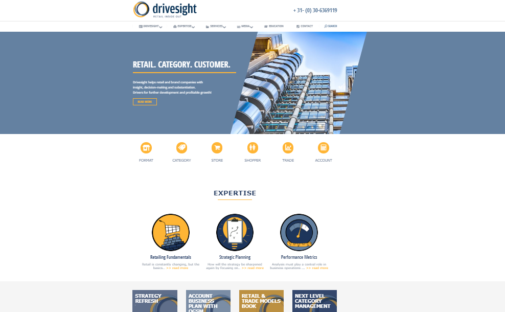

Greta Zanin
UX Designer and Illustrator
Illustrations for Driversight.com

About the project:
Driversight.com is a company specialized in retail management and customer marketing that helps leading retailers, brand producers and suppliers with decision-making in the retail sector. For the official opening of the website, I've been asked to come up with illustrations that would fit with the overall aesthetics while matching with the concepts of business, retailing and planning.
You can find their website (with my illustrations) by clicking : here.
Here below you can find the three drawings that were chosen for the following categories:
- Retail Fundamentals
- Strategic Planning
- Performance Metrics
While here I give an explanation of the choices I made: style, tools, thinking-process.
Ideating
Retail fundamentals, Strategic Planning and Performance Metrics are essential steps in the business world, but they may appear abstract when it comes to visualize them. How do they look like? How can you express these concepts?
Firstly, I chose to draw a few versions for each of the required steps, using the color palette that was already been used in the website: yellow, light blue and dark blue.
Secondly, I started using metaphorical figures to represent the concept. For instance, The retail would be the cart, while its fundamentals would be the basis to every structure, its fundaments.
For strategic planning I thought about different approaches: chess strategy, light bulbs, human brain or arrows with goals. In the end, the client went for a clean lined drawing that shows the path towards the goal.
Lastly, Performance Metrics has depicted through the use of a speedometer and a ruler, which perfectly represent the world itself.